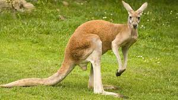
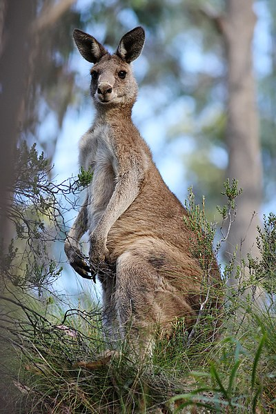

A magyar kenguru szó az északkelet-ausztráliai guugu-yimithirr nyelv szókészletéből ered. A szót James Cook 1770. július 14-i hajónapló-bejegyzése örökítette meg, és az útról szóló könyv kiadása nyomán vált világszerte ismert vándorszóvá. Magyar nyelvű szövegben először Földi János használta 1801-ben, kenguru alakban, de a szó csak a 19. század végére vált egyeduralkodóvá a nyelvújítás korában született riválisaival (például ugrány, górugrány) szemben. Fel-felbukkanó tévhit, hogy a szó eredeti jelentése: „nem értem a nyelvét” – amit állítólag az ausztrál őslakosok válaszoltak, miután az európaiak megkérdezték az állat nevét tőlük. Ezt a tévhitet John B. Haviland nyelvész cáfolta az 1970-es években. A Haviland által vizsgált szókészletben szerepelnek a gangurru és ngurrumugu egy kengurufaj megnevezéseként.
A kenguru az örök mozgás szimbólumává tehető. A helyzet az, hogy ezek az emlősök olyan magasságba tudnak ugrani, amely körülbelül kétszer meghaladja a saját magasságukat. Ez messze van a határtól. Ezenkívül a legtöbb faj állata egyáltalán nem ártalmatlan. Meglehetősen ügyesen harcolnak, különösen, ha a legnagyobb közülük szól. Kíváncsi, hogy a hátsó lábak segítségével történő ütés elkerülése érdekében a saját farkukon nyugszanak.
Mint kiderült, sok kenguru faj van. Ezek mindegyike a Zöld Kontinens bizonyos sarkain él. Az állatok leginkább, mint a lepedők és a legelők. A kenguruk sík területeken telepednek le, mivel szeretik a bokrok és a fűszegélyeket kóborolni. Az emlősök tökéletesen alkalmazkodnak az élethez a mocsarakban, valamint a hegyekben a sokoldalú kövek, hegyek és sziklák között.
Ausztráliában gyakran található kenguru települések közelében. Nem meglepő, hogy jelenléte a mezőgazdasági területeken vagy a városi települések szélén található. A legtöbb emlős eredendően alkalmazkodik a föld körül történő mozgáshoz, vannak kivételek. Olyan fa kengururól beszélünk, amely a trópusok erdőiben él. Az ilyen állatok életük nagy részét fákkal töltik.

| Elnevezés | |
| Magyar név | Kenguru |
| Tudományos név | Macropodidae |
| Angol név | kangaroo |
| Rendszertan | |
| Rend | Erszényesek Diprotodontia |
| Család | Kengurufélék Macropodidae |
| Egyéb információk | |
| Farok hossza | 1m védett |
| Átlagos súly | 85kg |